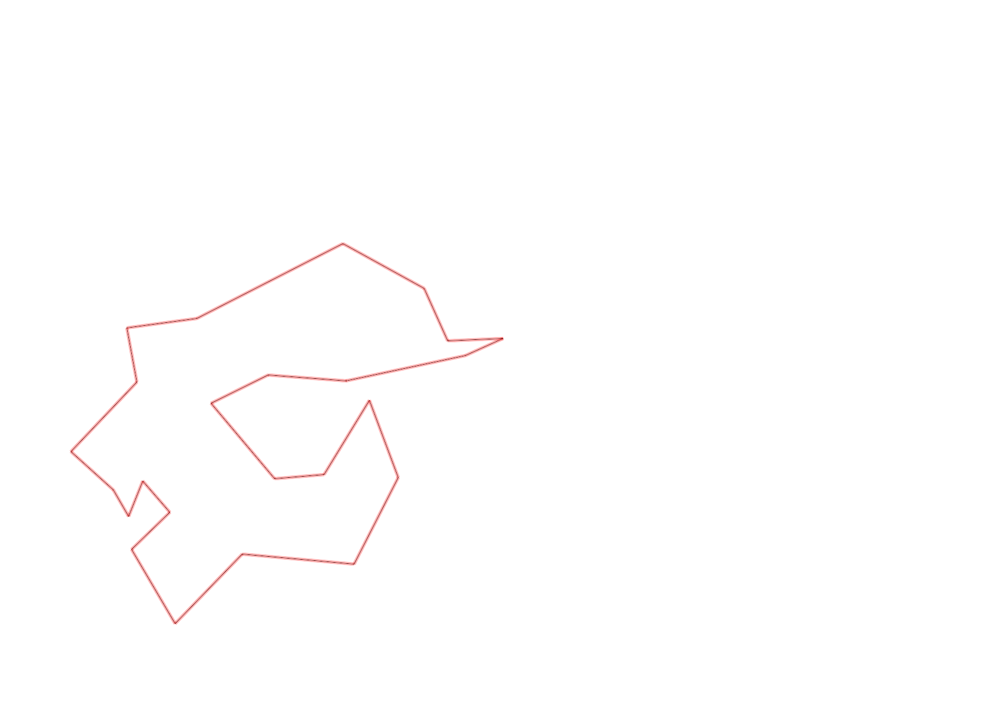
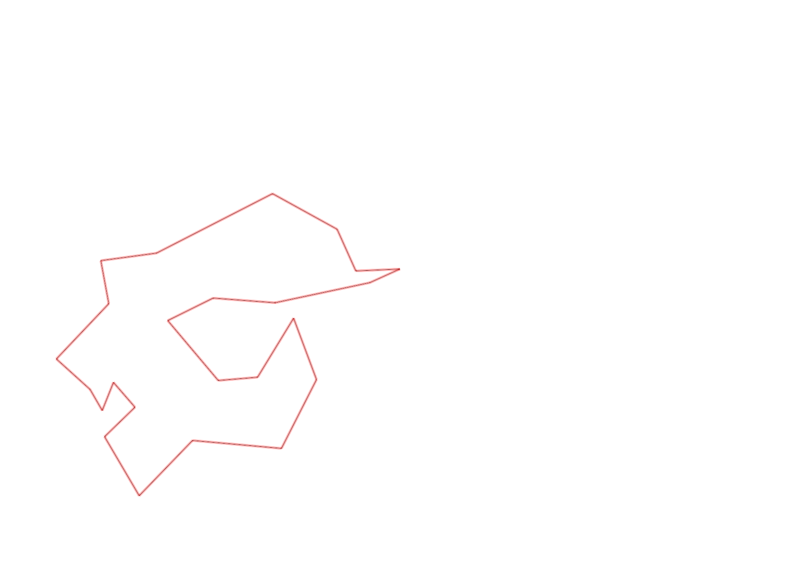

| Control |
Points |
Time Punched |
Distance |
Your Time |
Pace |
Place |
Fastest Time |
Median Time |
% Behind Fastest |
| 35 |
30 |
|
0.26 |
0:03:12 |
12:18 |
1 / 1 |
0:03:12 |
0:03:12 |
0% |
| 47 |
40 |
|
0.09 |
0:02:14 |
24:48 |
9 / 11 |
0:00:54 |
0:01:31 |
148% |
| 92 |
90 |
|
0.12 |
0:01:21 |
11:15 |
1 / 10 |
0:01:21 |
0:03:13 |
0% |
| 57 |
50 |
|
0.12 |
0:02:52 |
23:53 |
3 / 9 |
0:01:59 |
0:05:37 |
44% |
| 107 |
100 |
|
0.2 |
0:02:53 |
14:25 |
13 / 21 |
0:00:00 |
0:02:52 |
-% |
| 63 |
60 |
|
0.35 |
0:02:43 |
07:45 |
10 / 18 |
0:01:59 |
0:02:42 |
36% |
| 32 |
30 |
|
0.15 |
0:01:10 |
07:46 |
18 / 27 |
0:00:36 |
0:00:56 |
94% |
| 44 |
40 |
|
0.12 |
0:01:11 |
09:51 |
9 / 29 |
0:00:52 |
0:01:49 |
36% |
| 53 |
50 |
|
0.2 |
0:01:49 |
09:05 |
8 / 26 |
0:01:31 |
0:02:15 |
19% |
| 69 |
60 |
|
0.12 |
0:01:27 |
12:05 |
18 / 29 |
0:00:45 |
0:01:18 |
93% |
| 71 |
70 |
|
0.06 |
0:01:17 |
21:23 |
16 / 25 |
0:00:48 |
0:01:13 |
60% |
| 54 |
50 |
|
0.08 |
0:00:37 |
07:42 |
9 / 33 |
0:00:27 |
0:00:45 |
37% |
| 41 |
40 |
|
0.09 |
0:01:17 |
14:15 |
3 / 13 |
0:01:01 |
0:01:43 |
26% |
| 40 |
40 |
|
0.11 |
0:01:03 |
09:32 |
14 / 24 |
0:00:45 |
0:01:00 |
40% |
| 77 |
70 |
|
0.18 |
0:02:24 |
13:20 |
14 / 21 |
0:01:35 |
0:02:21 |
51% |
| 59 |
50 |
|
0.21 |
0:03:01 |
14:21 |
12 / 18 |
0:02:00 |
0:02:47 |
50% |
| 61 |
60 |
|
0.24 |
0:03:12 |
13:20 |
7 / 19 |
0:02:14 |
0:03:16 |
43% |
| 42 |
40 |
|
0.21 |
0:03:26 |
16:20 |
7 / 14 |
0:02:19 |
0:03:34 |
48% |
| 127 |
20 |
|
0.17 |
0:01:46 |
10:23 |
5 / 12 |
0:01:27 |
0:01:48 |
21% |
| 38 |
30 |
|
0.18 |
0:01:50 |
10:11 |
7 / 13 |
0:01:04 |
0:01:50 |
71% |
| 60 |
60 |
|
0.11 |
0:01:56 |
17:34 |
19 / 19 |
0:00:42 |
0:00:57 |
176% |
| 130 |
30 |
|
0.21 |
0:01:22 |
06:30 |
1 / 5 |
0:01:22 |
0:02:06 |
0% |
| 126 |
20 |
|
0.14 |
0:01:22 |
09:45 |
5 / 12 |
0:01:09 |
0:01:26 |
18% |
| Finish |
0 |
|
0.17 |
0:00:52 |
05:05 |
3 / 9 |
0:00:31 |
0:00:57 |
67% |
Total Distance Covered: 3.89km
Points Scored: 1130
Late Penalty: 0
Final Score: 1130
Total Time: 0hours 46minutes 17seconds
Efficiency: 290.49 points/km
 
